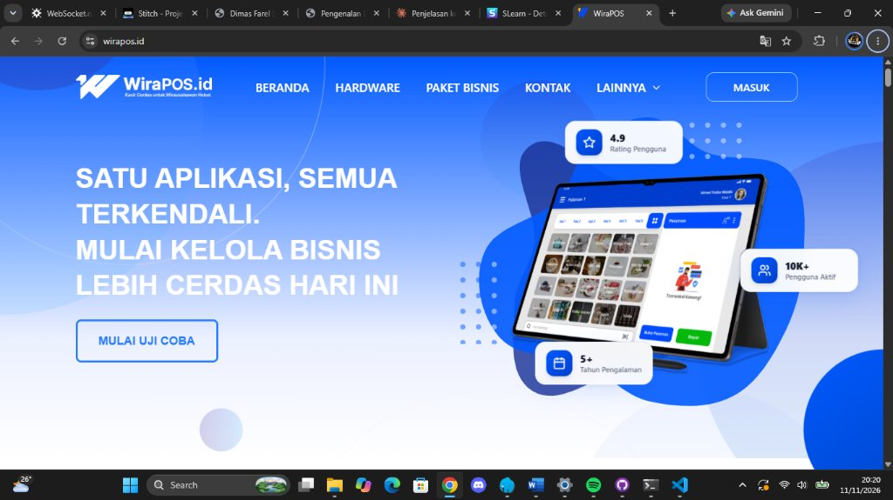
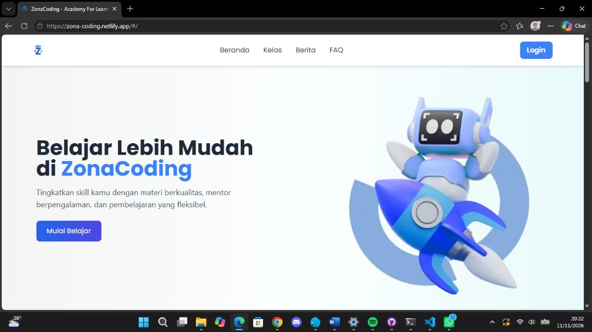

Halo, Saya Dimas Farel Sarwoko.
Mahasiswa Teknologi Informasi asal Jember, Jawa Timur yang fokus dalam pengembangan backend, fullstack web menggunakan JavaScript, TypeScript, React, PHP Laravel, serta memiliki minat pada robotika & IoT.
Website sederhana ini saya buat sebagai media pengenalan diri, membagikan latar belakang pendidikan, proyek yang pernah saya kerjakan, serta proses belajar saya di dunia teknologi.

Dimas Farel Sarwoko
{
"nama": "Dimas Farel Sarwoko",
"role": "Backend & Fullstack",
"kampus": "Politeknik Negeri Jember",
"status": "Mahasiswa Aktif"
}TENTANG SAYA
Cerita Singkat Tentang Perjalanan Saya
"Berawal dari Rasa Ingin Tahu, Terus Tumbuh Melalui Teknologi"
Perkenalkan, nama saya Dimas Farel Sarwoko. Saya adalah seorang mahasiswa yang sedang menempuh pendidikan di Program Studi Teknik Informatika, Politeknik Negeri Jember.
Perjalanan saya di dunia teknologi bermula saat bersekolah di SMK Negeri 6 Jember jurusan Rekayasa Perangkat Lunak (RPL). Sejak saat itu, saya jatuh cinta pada logika pemrograman, baik di sisi backend yang menangani data dan server, maupun di sisi frontend yang menyajikan pengalaman pengguna yang interaktif.
Saya memiliki pengalaman nyata dalam proyek industri seperti mengembangkan backend untuk aplikasi kasir WiraPOS pada masa magang, membangun platform course ZonaCoding sebagai fullstack developer, dan saat ini sedang mengerjakan backend untuk Web Absensi Siswa.
Polije
Mahasiswa Aktif
Menempuh jenjang D4 Teknik Informatika di Politeknik Negeri Jember.
SMKN 6
Alumni RPL
Mempelajari dasar algoritma dan pemrograman web di SMK Negeri 6 Jember.
Industri
Pengalaman Magang
Berpengalaman mengerjakan backend industri (WiraPOS di PT Hummatech).
BIODATA
Data Diri & Profil Pribadi
Dimas Farel Sarwoko
Dimas / Farel
Jember, Jawa Timur
Mahasiswa D4 TI Polije
Backend & Fullstack Web
"Belajar hal baru setiap hari"
PENDIDIKAN
Riwayat Pendidikan Formal
PERGURUAN TINGGI
Politeknik Negeri Jember
Sedang Menempuh Pendidikan
MATERI & FOKUS PEMBELAJARAN:
SEKOLAH MENENGAH KEJURUAN
SMK Negeri 6 Jember
Alumni
MATERI & FOKUS PEMBELAJARAN:
PENGALAMAN PROYEK
Proyek yang Pernah Saya Kerjakan

Magang • BackendWiraPOS.id
Aplikasi kasir cerdas (Point of Sale) untuk wirausahawan yang dikerjakan pada masa magang industri di PT Hummatech. Bertanggung jawab di sisi backend untuk mengelola transaksi penjualan, data barang, inventaris, dan komunikasi API ke sistem kasir.

Web Course • FullstackZonaCoding
Platform website pembelajaran coding online (Academy for Learn) untuk membantu pengguna belajar pemrograman dengan mudah. Bertugas sebagai fullstack developer dalam membangun antarmuka web, logika halaman, serta integrasi sistem kursus.
Web Absensi Siswa
Sistem pencatatan dan pengelolaan absensi kehadiran siswa sekolah secara digital. Saat ini masih dalam tahap pengerjaan (ongoing) dan saya fokus bertugas di bagian backend untuk merancang struktur database serta endpoint API data kehadiran.
YANG DIPELAJARI
Teknologi & Keterampilan yang Dipelajari
Frontend & UI
Mempelajari pembuatan antarmuka pengguna web interaktif dan terstruktur.
Backend & Logika Server
Mempelajari logika pemrograman server, pembuatan RESTful API, dan arsitektur data.
Basis Data & Alat Pengembang
Penyimpanan relasi data dan alat bantu kolaborasi pengembangan kode.
MINAT & HOBI
Hal-Hal yang Saya Sukai
Ngoding & Eksplorasi Web
Sangat suka mencoba bahasa pemrograman baru, mencari tahu cara kerja API, dan menyusun database agar aplikasi berjalan rapi dan efisien.
Robotika & IoT
Tertarik menghubungkan mikrokontroler (seperti ESP32/Arduino) dengan jaringan internet untuk membaca sensor dan otomatisasi perangkat.
Membaca Berita Teknologi
Senang membaca perkembangan dunia software engineering, tren AI, serta tools baru yang memudahkan pembuatan aplikasi modern.
Mendengarkan Musik & Gaming
Mendengarkan lagu dan bermain game santai di waktu luang untuk menyegarkan pikiran setelah berkutat dengan baris kode dan tugas kuliah.
KONTAK
Mari Terhubung & Berteman
Senang Berkenalan dengan Anda!
Punya pertanyaan seputar perkuliahan, ingin berdiskusi seputar proyek web dan pemrograman, atau sekadar menyapa? Jangan ragu untuk menghubungi saya melalui kontak di bawah ini.
Email Pribadi
dimasfarelsarwoko@gmail.comAlamat / Domisili
Jember, Jawa Timur, Indonesia
Institusi Saat Ini
Politeknik Negeri Jember (D4 TI)